Ciao, sono Francesco ho 33 anni e faccio il falegname; fin dai tempi dell'adolescenza ho sempre avuto il pensiero o il sogno di fare un esperienza di volontariato in Africa; per diversi motivi non ho mai avuto l'opportunità o il coraggio di fare il passo decisivo per rendere concreta questa mia aspirazione, ma finalmente in autunno son riuscito a superare quelle prevedibili titubanze e quei dubbi che spesso nascono nel momento in cui si vuole "realmente" partire per questo tipo di avventure; grazie alle ricerche in internet son venuto a conoscenza dell'Associazione Pamoya e del suo impegno in Tanzania e quindi mi son fatto vivo chiedendo se era possibile mettere a disposizione la mia professione per cercare di aiutare la missione di Don Tarcisio e Fausta ad Ilembula; con l'aiuto di Marilisa ed Emilio abbiamo organizzato il viaggio, preso il biglietto e via…non c'erano più scuse, bisognava partire…
E così dopo due giorni di viaggio tra aereo e pullman sono arrivato ad Ilembula accolto in casa da Fausta e Don Tarcisio; i giorni lavorativi iniziavano dopo colazione alle 7.15 la mattina e proseguivano per tutta la giornata; agli ordini di Don Tarcisio ciò che ho dovuto fare sono stati lavori di falegnameria "classica" quali riparazione di porte e finestre, costruzione di scaffali, armadi, tavolini, assistenza al gruppo di Giussano che stava posando il tetto della chiesa…e tutto ciò che di utile c'era da fare; tutto questo nella piccola falegnameria della missione, con la compagnia del mio collega Tanzano Josef…piccola falegnameria, ma ben fornita, con tutto l'indispensabile per poter lavorare come si deve…ecco, forse il legno utilizzato in Tanzania, l'Eucalipto, non è tra le essenze di legno più comode da lavorare, però qualche cosa di buono ci si riesce a fare…tutto ciò tra bimbi sorridenti che ti venivano incontro per essere presi in braccio, che ti canticchiavano canzoni, che ti chiamavano per nome per giocare un po' con loro e che ti rendevano il lavoro "speciale"…bambini dell'orfanotrofio ai quali, grazie al lavoro e all'impegno di chi ha creato queste strutture, viene garantito un futuro.
E poi attorno a tutto ciò c'è l'Africa…coi suoi affascinanti paesaggi che si perdono a vista d'occhio, la sua gente, la sua atmosfera, i suoi ritmi, il suo spirito…la gente che ti saluta e ti fa sentire a casa, i villaggi con i tetti delle case in paglia dove assieme a Don Tarcisio veniamo invitati a pranzo, i modi di vestire, le usanze, le piante, gli animali, gli insetti…ci si trova continuamente ad affrontare situazioni nuove che oltre ad affascinare suscitano rispetto e permettono di guardare in modo diverso anche la propria vita e le proprie abitudini… e nonostante non si conosca la lingua locale (lo swahili) in qualche modo si riesce ad interagire con la gente del posto e a capirsi.
E i giorni passano veloci e ci si rende conto come i confort e i privilegi della vita "occidentale" forse non sono così essenziali per stare bene e per vivere in serenità e pace con se stessi…e quelle paure e titubanze che si avevano prima di partire vengono spazzate via giorno dopo giorno…e tornato a casa, non si vede l'ora di ripartire per una nuova avventura…
Grazie a Pamoya e a tutti coloro che hanno reso possibile questa fantastica esperienza.
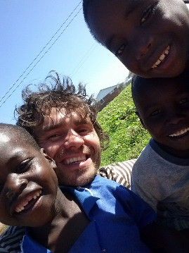
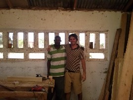
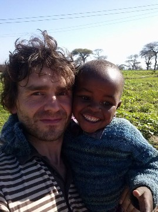
Ho sempre desiderato di poter svolgere, un attività di volontariato in qualche paese povero del mondo.
Affascinato dai racconti e dalle immagini fotografiche che mio zio Giovanmaria mi mostrava, riguardo alle sue esperienze di volontariato vissute nel Perù, nel Madagascar e come socio, nell'attività dell'OPERAZIONE MATOGROSSO:associazione di volontariato operante nell'America Latina, ma anche in Italia, con la raccolta di fondi da destinare alle popolazioni più disagiate.
Quest'anno, dopo una sua proposta per una nuova operazione, mi sono deciso per partire con lui.
Destinazione Tanzania, in Africa, per svolgere attività di tipo edile nella costruzione di una scuola d'agricoltura, situata nel villaggio di Njombe dove operano, coordinano e vivono da vent'anni dei missionari italiani.
Organizzatomi con i datori di lavoro per il rilascio delle ferie, il giorno 08-07-2013 sono partito per la mia esperienza fino al 07-08-2013, in cui sono tornato a Paspardo, il paesino della Vallcamonica dove vivo.
Devo ammettere che il rientro è stato scombussolante! Ormai mi ero abituato ad una realtà completamente diversa dalla nostra
La prima settimana rimasi impressionato nel vedere tanta miseria intorno a me, nonostante che ero ben sistemato, nella missione di don Tarcisio.
Era proprio questa posizione che mi colpiva.
Noi qui, avevamo tutto! E anche se comunque l'ideologia di vita era improntata nel risparmio in tutti i sensi e soprattutto dell'acqua, bene preziosissimo! Per una terra come questa, dove fuori la gente faceva di tutto per averla!
Mentre col furgoncino mi dirigevo verso il cantiere, per iniziare la giornata lavorativa lungo la strada incontravo molte persone che già dal mattino presto partivano a piedi o in bici, per chi la possedeva, con dei grossi fusti alla ricerca di quest' importante risorsa.
La vita per loro era una lotta quotidiana alla fame e alla sete.
Io e mio zio proseguivamo il lavoro di costruzione della scuola, affiancati da molti operai africani del villaggio di cui ne facevano parte molti giovani, donne e bambini anche molto piccoli.
Nonostante le condizioni in cui lavoravano e la misera paga che ricevevano, erano ancora fortunati rispetto a chi proprio un' occupazione non aveva,e che quindi era schiavo della povertà assoluta.
Inizialmente, l'approccio tra noi e loro è stato di studio.
Soprattutto per la difficoltà nel comunicare e perché abituati a vedere nell'uomo bianco una figura di superiorità non davano molta confidenza, ma poi con la mia scarsa conoscenza dell'inglese e con un po' di gesti ho spiegato le mie intenzioni di aiuto e collaborazione e non di autorità.
Fu cosi che tra noi si creò un rapporto di amicizia grandioso!
Le giornate lavorative diventarono sempre più divertenti e interessanti.
Erano un operare ma anche nell'insieme uno scambio culturale.
Tanto ho dato e altrettanto, anzi, di più ho ricevuto da loro.
Ho conosciuto delle persone grandissime, pronte a dare tutto per il prossimo e a farlo sentire come un fratello.
In questo periodo, oltre all'attività principale nel cantiere, io e lo zio, abituati da sempre a far di tutto, siamo intervenuti per svolgere diversi lavori, anche in altri villaggi e questo ha permesso a noi di girare e di vedere molto, in particolare le differenze tra un paese e l'altro, riconoscibili già dal terreno e dalle abitazioni che definivano il grado di povertà dei vari abitanti.
L'esempio, si notava appunto già dalla struttura dell'abitazione stessa: da case di fango e paglia, ad altre più strutturate con mattoni e lamiere.
Dal procurarsi l'acqua scavando delle buche profonde nel terreno, a valle di ruscelli inquinati per trovarla filtrata ai pozzi manuali, installati nel centro dell'abitato.
Dal possedere delle bestie ed un pezzo di terra da coltivare a non avere nulla e quindi "denutrizione"!
E tutti quei bei bambini che passando s'incontravano, sorridenti per strada fuori dalle case, o quelli ancor più fortunati mentre andavano a scuola, che nonostante la realtà, esprimevano la loro libera felicità con dei calorosi saluti…..non saprei che dire se paragonati ai nostri, spesso viziati e difficili da crescere.
Sono rimasto impressionato dall'umiltà di questa gente, dall'onestà e dal rispetto che hanno sempre mantenuto nei miei confronti ma anche tra di loro.
Dall'ospitalità che già da primi tempi mi hanno offerto.
Queste persone, sono un esempio, un insegnamento di vita che la nostra società frenetica e insoddisfatta dovrebbe conoscere.
Ho trascorso un esperienza indimenticabile! Ma anche una lezione di vita.
Sono veramente contento!
Penso che ogni tanto a tutti farebbe bene conoscere queste realtà, per essere consapevoli della fortuna e delle possibilità che abbiamo, ma che spesso non apprezziamo e non siamo in grado di sfruttare.
Del consumismo e degli sprechi di una società malata ed inquinata per mano nostra, dove egoismo e cattiveria spesso prevalgono rispetto alla ragione.
Sono convinto che esperienze di questo tipo, vissute a contatto con la realtà del posto e quindi non attraverso racconti o documentazioni, ci sono d'aiuto anche in momenti di debolezza della nostra vita, dove a volte di fronte ad un banale ostacolo, ci si ferma e non si ha la forza di affrontarlo.
Proprio in questi momenti bisogna pensare alle tante difficoltà di quella gente, e nonostante ciò, alla serenità con cui affrontano la vita.
Paspardo 13-11-2013
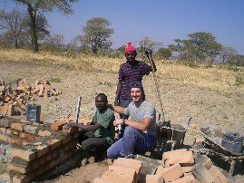
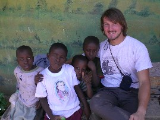
28 Ottobre 2013: atterriamo a Dar Es Salaam a notte fonda per avventurarci in una terra per noi tutta da scoprire, la Tanzania. E' la nostra prima volta nell'Africa nera. Già le prime pratiche all'aeroporto ci mostrano le differenze nelle infrastrutture, ci sentiamo gli occhi puntati addosso essendo bianchi…ma siamo curiosi di procedere. Finalmente ci raggiunge il tassista, che ci porta alla stazione dei bus…questo penso sia il tragitto che non dimenticheremo mai: auto e motociclette che viaggiano impazzite mischiandosi con motocarri che fungono da taxi (i cosiddetti bajaji), furgoncini con persone sul cassone, carretti spinti a mano o trainati da asinelli. E poi venditori ambulanti che attraversano la strada con ceste sul capo contenenti articoli di ogni genere, come frutta, snack, acqua. Nessuna norma pare sia rispettata, al punto che la strada si trasforma in un mix di persone, mezzi, animali…e il primo che si butta nella mischia riesce a farsi largo. Rimaniamo allibiti nel vedere cotanto movimento, già alle cinque del mattino! A seguire un viaggio in pullman di circa dieci ore, con due soste. Nel tragitto osserviamo i tanti villaggi con case di fango e paglia e anche di mattoni rossi. Tantissimi i bambini che vediamo a bordo strada, giocano, ridono e salutano. Compare ad un certo punto anche un babbuino e poi altri, che meraviglia vedere un animale nel suo habitat naturale e non rinchiuso in gabbia! E quanti baobab, quegli alberi dal fusto gigante che ci facevano disegnare alle scuole elementari, tipici della savana, insieme alle tante acacie.
Le tre settimane seguenti siamo stati ospiti presso la parrocchia di Ilembula, alla missione di Don Tarcisio e Fausta. Ci siamo presto abituati al ritmo tanzaniano: qui la gente si sveglia col sole e si ritira al tramonto, dal momento che le case non sono dotate di impianti elettrici, né tantomeno di tubature idriche. La vita quotidiana è molto semplice e ruota perlopiù attorno ad agricoltura, allevamento e commercio. Ogni attività viene però eseguita manualmente o con l'utilizzo di pochi utensili. Le donne, in particolare, si occupano dei campi oltre che della casa e dei figli. Difficile scordarsi la vista di una donna spesso incinta e con un bambino dietro la schiena, che porta anche una zappa a spalle se non legname o secchi d'acqua sul capo. Per non parlare dei tanti bambini dietro a lei con altri fusti o secchielli d'acqua. Vi chiederete...e gli uomini? Molti di loro si vedono gironzolare in bicicletta o in moto, altri chiacchierare sotto gli alberi, alcuni presso i negozi come venditori oppure impegnati in cantieri edili, come quello gestito da Gabriele Zaina, dove ha lavorato Marco nel tempo in cui ci siamo fermati. Si tratta di una scuola di agricoltura e allevamento che pian piano sta prendendo forma, nei suoi vari stabili: uffici, mensa, aule, casa del preside, collegio femminile e maschile. Incredibili i forni di mattoni, vengono preparati completamente a mano con terra e acqua e poi cotti prima che la stagione delle piogge abbia inizio.
E' difficile descrivere a parole un mondo che è completamente diverso dal nostro: il clima, il paesaggio, la gente, i mezzi di trasporto, le usanze… Ci ha particolarmente colpito il rito della messa domenicale, cantato e ballato per la maggior parte del tempo, e molto sentito.
La gente qui vive nella povertà più assoluta, ma è serena, generosa e accogliente. In una delle visite con Fausta più di una volta mi è capitato che ci venissero regalate delle uova o della verdura. Ma credo che non scorderò mai il giorno in cui sono stata con lei a visitare una signora inferma in una casetta di fango e paglia. La porta era di legno, le finestre senza vetri ed erano coperte da assi, l'interno era piuttosto buio, si intravedevano solo una pentola con delle braci in un angolo, sacchi di mais e farina in un altro e lei, che giaceva su delle stuoie e tele, naturalmente per terra. La donna ha chiesto del denaro per poter sostituire delle lamiere del tetto, ma a parte ciò, era contentissima di essere migliorata in seguito alla caduta in un pozzo, ora riusciva ad alzarsi rimanendo in ginocchio. Non scorderò mai il suo sorriso e la gioia con cui ci ha comunicato tutto ciò.
Così come non dimenticheremo mai i bambini del centro orfani di Ilembula: bastava poco per attirarli a giocare con noi, a pallone o semplicemente a dondolarli nell'aria o in cerchio tutti insieme. Ogni sera poi aiutavamo il volontario Maurizio a medicarli. E loro erano sempre contenti, nonostante le malattie e le loro basse aspettative di vita.
Descrivere un'esperienza di volontariato in poche righe non è semplice, resta il fatto che ci ha lasciato un segno indelebile nel cuore e la consiglieremmo a tutti, soprattutto a coloro che spesso si lamentano e che sono schiavi delle tecnologie, del comfort e del benessere. A volte bisognerebbe abbandonare il ritmo frenetico e liberarsi la mente per sentirsi leggeri e ricordarsi che la vita è una nonostante tutte le difficoltà.
Da qui il nostro augurio: Hakuna matata, vivi senza pensieri!
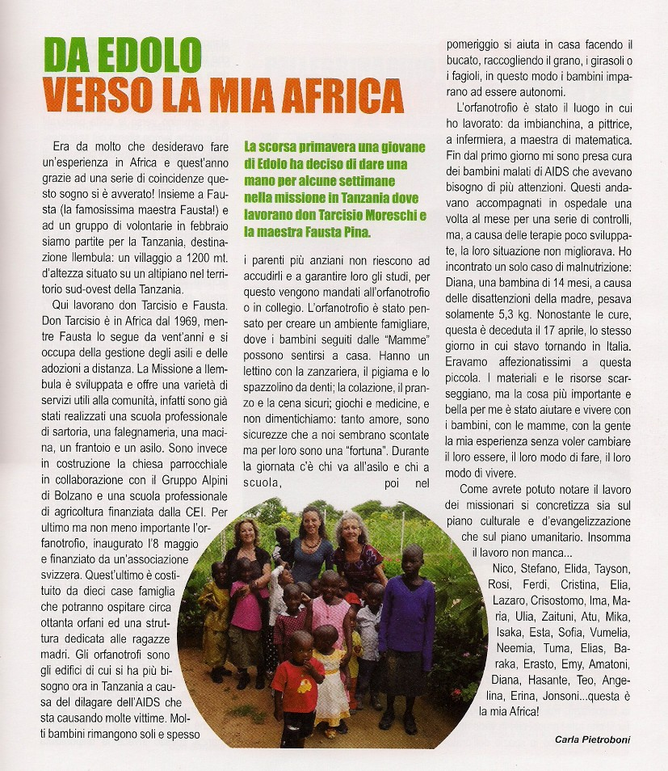
Sette luglio 2010, è quasi un giorno che viaggiamo, finalmente atterriamo. Già si sente il profumo nell'aria, il profumo di una nuova terra.
Ci immergiamo immediatamente nel traffico di Dar Es Salaam, il primo pensiero è " Guarda siamo a Napoli! ", ma noi ce ne andiamo subito, la nostra meta è più a sud.
Durante il percorso, tra un sonnellino e l'altro, abbiamo modo di guardare, osservare, sentire, insomma prendere tutto quello che il panorama africano ci sta offrendo. In lontananza, l'orizzonte, coperto dalla secca vegetazione: piccoli alberelli bruciati dal sole, cespugli ondeggianti nel vento. Qualche animale tipico: gazzelle, elefanti e zebre nascosti ai piedi di qualche baobab. Lungo la strada, invece, molte scimmie sembrano del tutto disinteressate dallo sfrecciare delle auto, dei pulmini, delle moto, piuttosto cercano di tanto in tanto qualche frutto da sgranocchiare. Ma lungo la strada anche tante, tantissime persone. Chi a piedi, chi in bicicletta, quasi tutti trasportano qualcosa, c'è chi con la bici trasporta pomodori, chi galline, chi un amico e chi perfino un divano! La gente a piedi non è da meno, vediamo donne che camminano tranquillamente con un carico di legna sulla testa, o secchi carichi di verdure.
In serata arriviamo, meta raggiunta, villaggio di Ilembula, ma il nostro viaggio è appena cominciato.
Ci fermiamo quattro settimane, la prima la passiamo alla casa di Fausta e Don Tarcisio, poi ci spostiamo a Ikelu per iniziare il lavoro all' ospedale. Durante il nostro soggiorno abbiamo modo di conoscere lo stile di vita, i costumi della gente del posto. Ci colpiscono parecchio l'allegria, la voglia di ridere e essere felici e l'ospitalità. Una domenica pomeriggio, andiamo a trovare Agree, l'imbianchino con il quale si è creato un bel legame. Dopo una dozzina di chilometri lungo le strade sterrate arriviamo, ci accoglie tutta la famiglia. La struttura della casa è tipica: un edificio per le camere e un piccolo salotto, un altro per la cucina. Il bagno è una piccola casetta che rimane più distaccata dal resto. Ci sono galline, caprette, dei maiali, porcellini d'india e un cagnolino. Si capisce che è la casa di persone "benestanti". Rimaniamo, e ci viene offerto uno dei piatti tipici, essenziale, l' ugalii con fagioli. L'ugalii è una polenta bianca con poco sapore che viene mangiata solitamente con i fagioli o con le erbe. Prima di ripartire ci sono stati regalati cornetti, pannocchie e canna da zucchero come segno di riconoscenza e di ospitalità.
Moltissimi sono i bambini che si incontrano, tutti che ti chiedono una "bibi" (caramella), tante volte ti prendono per mano e camminano un tratto con te poi scappano e ridono. Vogliono giocare e lo fanno diffondendo allegria, ma sono bambini che compiono anche i loro piccoli compiti, insomma non sono bambini che si trovano la cosiddetta "pappa pronta" come spesso accade qui.
In quattro settimane probabilmente non abbiamo cambiato la vita di nessuno,siamo due dei tanti bianchi che passano e si fermano per un po'. Quello che però noi abbiamo guadagnato è un bagaglio che probabilmente porteremo con noi per tutta la vita, si dice che le persone da un viaggio tornano cambiate, così è successo. Abbiamo imparato il valore anche della cosa più piccola, il valore degli affetti, dell'amore che ogni giorno riceviamo, e tutto quello che anche noi possiamo offrire, nel nostro piccolo, ma daremo sempre qualcosa che può cambiare, aiutare qualcun'altro.
Giulia e Francesco
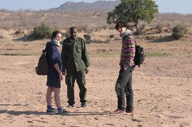
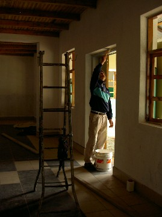
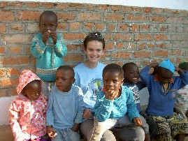
Ponte di Legno, 17 ottobre 2011
Carissimi Soci,
al rientro della mia trasferta "Africana" voglio esternarVi le impressioni, le emozioni che ho vissuto e che vorrei in un certo qual modo condividere con Voi. Il viaggio è stato lungo, le soste negli areoporti estenuanti, ma ne è valsa la pena perchè la gioia, la meraviglia che ho potuto constatare negli occhi degli amici africani sono stati per me motivo di grande riflessione.
La giornata dell'inaugurazione dell'ospedale fredda, piovosa, un vento gelido sembrava di essere al polo nord più che in Africa è iniziata con l'arrivo di autorità civili e religiose: rappresentanti del Governo centrale e locale, della diocesi, del Rotary Club di Iringa, vari sacerdoti, tantissime suore provenienti dai vari villaggi e molta moltissima gente...tantissimi bambini.
Nastri e coccarde, opera dei volontari presenti in loco, addobbavano l'insieme. Un posto d'onore spettava agli ospiti giunti dall'Italia in rappresentanza del RC Lovere Iseo Breno e dell'Associazione Pamoya. Dopo la celebrazione della S. Messa da parte del rappresentante del Vescovo di Iringa, persona veramente squisita che parlava italiano perchè aveva vissuto a Roma per qualche tempo, si sono susseguiti i discorsi di rito - tutti in lingua locale Swahili - dove le varie autorità presenti si sono impegnate a completare definitivamente la struttura e i servizi . Don Tarcisio ha sottolineato nel suo intervento che l'ospedale servirà soprattutto per curare i poveri e la gente in difficoltà. Sarà comunque disponibile anche per i ricchi (se così si possono chiamare).
La proprietà del nosocomio è della Suore Benedettine di Njombe a cui verrà affidata anche la gestione. Copre un fabbisogno di oltre 200.000 persone che potranno usufruire di vari reparti: pronto soccorso, laboratorio analisi, maternità, radiologia, pediatria, chirurgia e laboratorio dentistico. La priorità comunque è l'apertura a breve del pronto soccorso e del laboratorio di analisi. Ora si tratta di far partire il tutto e sicuramente non è cosa facile visto i tempi degli africani, la mancanza di attrezzature che dovranno essere acquistate nella capitale , la necessità della presenza in loco di medici e tecnici italiani, almeno per un certo periodo per poter avviare al meglio l'ospedale. Le Suore Benedettine forniranno gran parte del personale che verrà pagato dal governo, come pure la fornitura di medicinali, ma sarà indispensabile la presenza di nostri professionisti. Un'altra cosa di principale importanza è la nomina del consiglio di amministrazione del nosocomio che, in questa prima fase dovrà dare delle indicazioni ben precise sulla gestione in tutti i suoi aspetti.
Mentre camminavo nel reparto adibito alla maternità con i lettini attualmente vuoti, immaginavo quando questo reparto sarà funzionante, il vociare dei bambini, i canti delle mamme, il suono dei tamburi, e così dicasi anche per gli altri reparti. Pensavo: quando l'ospedale sarà completamente funzionante solo allora potremo dire di aver contribuito ad un grande miracolo! Vicino all'ospedale sorge il villaggio Tumaini, quello dei bambini orfani dove opera la volontaria Fausta Pina. Sono un gruppo di casette - quattro per ogni gruppo;( i gruppi sono 5) così suddivise: cucina, dispensa, camere e cortile per giocare. Ognuna di loro è autonoma ed è gestita da personale locale. Ci sono anche alcune mamme con i loro bambini. L'età dei bambini va da pochi giorni sino all'età scolastica. I bambini sono accuditi amorevolmente, le casette sono linde e pulite e in più c'è anche la presenza di volontari del servizio civile che fanno veramente un lavoro notevole e importante. Anche questa struttura, unita all'ospedale di Ikelu, sarà un segno tangibile di solidarietà, di cambiamento, di condivisione, di servizio, e di amicizia tra i popoli. Il Rotary è una grande famiglia il cui motto è: servire al di sopra di ogni interesse personale, trovare il tempo per servire vuol dire trovare il tempo per amare e se vogliamo amare dobbiamo servire fino in fondo. Amici carissimi, a ciascuno di Voi chiedo il massimo impegno.
Scusatemi perchè mi sono dilungata troppo e Vi ringrazio infinitamente per l'attenzione.
Un abraccio a tutti.
Terry Bormetti
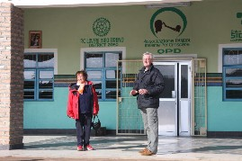 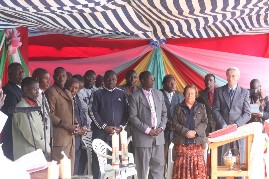